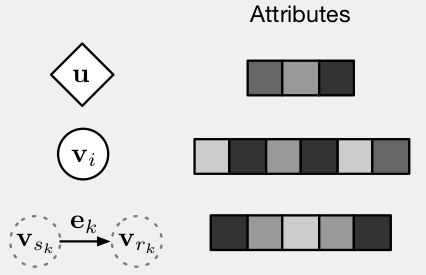

开个新坑。
DeepMind，Google Brain，MIT，University of Edinburgh，这阵容，不能不看。
这篇略有些不同，讨论的不是一个方法，一个技术，一个验证，而是关于人工智能发展方向，或者说我们应该着重的研究和探索的方向。我们人类究竟能不能获得强人工智能，又如何才能获得强人工智能？这篇论文当然也没有答案，只是提供了一些想法。那就让我们来看一看都写了些啥。
以下是自己整理的一些关键点，没有逐句翻译，感兴趣的可以结合原文来看。
In particular, generalizing beyond one’s experiences—a hallmark of human intelligence from infancy—remains a formidable challenge for modern AI.
大意就是，我们离强人工智能其实还挺远的。
然后这篇文章的立场：
We argue that combinatorial generalization must be a top priority for AI to achieve human-like abilities, and that structured representations and computations are key to realizing this objective.
结构化的表达和计算，也许是实现强人工智能的关键。
这篇文章干了啥？
We discuss how graph networks can support relational reasoning and combinatorial generalization, laying the foundation for more sophisticated, interpretable, and flexible patterns of reasoning.
三个关键单词，graph networks，relational reasoning，combinatorial generalization。这篇文章就是在讨论，graph networks 在relational reasoning和combinatorial generalization这两块的作用。至于这三个都是啥？咱且慢慢说。
首先说combinatorial generalization，强行翻译就叫她组合生成吧。
A key signature of human intelligence is the ability to make “infinite use of finite means” (Humboldt, 1836; Chomsky, 1965)
人类智慧的关键点，能用有限创造无限。比如我们的语言，有限的单词，无限的话语；比如1900的钢琴曲，有限的琴键，无限的音乐。下面引述一段“1900”的一段的台词：
Take a piano. The keys begin，the keys end.
You know there are eighty-eight of them，nobody can tell you any different.
They are not infinite.
You are infinite. And on these keys the music that you can make is infinite.
I like that. That I can live by.
所以可能，无限生于有限，而永恒藏于瞬间。
这里第一个概念就出来了，人类用单词构造语句，用音符谱乐曲的能力，就叫做combinatorial generalization，这里翻译成组合生成。
那人这种能力又是怎么来的？
We represent complex systems as compositions of entities and their interactions 1 (Navon, 1977; McClelland and Rumelhart, 1981; Plaut et al., 1996; Marcus, 2001; Goodwin and Johnson-Laird, 2005; Kemp and Tenenbaum, 2008)
我们人类的认知系统可以将现实中获得的信息概括成实体或概念，并将这些实体和概念关联起来。另外，实体和概念还会被分为不同层级，比如你在家庭里面，而家庭又在小区里面，小区又在城市里，城市在国家里。我们擅长用熟悉的技能和规则解决新的问题。例如你第一次规划一个行程，那么这个任务其实可以分解成很多小的你熟悉的问题，比如怎么去一个地方，怎么订酒店，在哪儿吃饭，几点到几点干什么。我们擅长类比，关联，推理，从获得的经验中抽取实体和关系，在遇到新的问题的时候，进行类比，关联，来确定新的实体或概念之间的关系，进而推理获得新的问题的解决方法。
其实一开始，受限于收集数据和计算的成本，人工智能领域比较倾向结构化的方法来解决问题。而如今，随着收集数据和计算的成本降低，大家又都偏向端到端的解决问题的方式，比如深度学习，在各个领域获得了巨大进展。但深度学习明显不是什么都能做到的，比如对语言和场景的理解，结构化数据的推理，训练场景之外的迁移学习，还有从少量经验中学习的能力（比如一个小孩子，可以通过几张照片来认识一个新的生物，并不需要一大堆样本）。
重申立场：
We suggest that a key path forward for modern AI is to commit to combinatorial generalization as a top priority, and we advocate for integrative approaches to realize this goal.
这篇文章认为，组合生成才是实现人工智能的关键，而要实现这个目标，需要结合各种技术，包括深度学习，结构化方法，等。
接下来，Relational Reasoning，关系推理
我们定义结构，由已知的模块相互关联组成的产物。比较典型的如知识图谱，再有因果图谱也是。那么一个结构化的表达包含哪些元素呢？
1. 实体（entity)，有特征或属性的元素或概念，比如特朗普，白宫，宪法，白桦树。
2. 关系（relation），实体和实体之间的属性，比如特朗普和白宫的关系，特朗普是白宫的前任主人？除了从属关系，还可以是很多其他关系，比如谁比谁高，谁比谁的销量好，谁喜欢谁，等等。
3. 规则（rule），可以想成一个函数，输入是实体，关系，通过这个函数将输入的实体和关系映射到其他实体或关系，比如判断一个实体是不是重的，判断一个实体是不是比另一个实体重。
结构化表达，即捕捉结构的组成（比如元素的排布），而结构化计算，将元素和组成作为一个整体，进行操作。关系推理，使用构成实体和关系的规则操控实体和关系的结构化表达。这里我晕了，并没有理解，咱就过吧。
Relational inductive biases 关系归纳偏置
先说归纳偏置
学习是一个通过观察和和世界交互来获取和理解知识的一个过程。它包括搜索一个最佳或更优的解决问题，解释数据，或者获得报酬的策略。但是好的策略和方法往往不止一种。归纳偏置则是使得学习算法去偏向一种或一个方法，策略或解释。在机器学习中，归纳偏置非常常见，举个例子，贝叶斯网络中的归纳偏置通常是通过先验函数的选择和参数化来表达的。其他情况下，用来避免过度拟合的正则项（regularization term），还有网络结构的设计，都能达到归纳偏置的效果。
用大白话说一下，就是，我们知道，解决这个问题呢，有很多很多种可能，但是我们的大脑根据经验，某个特性，或者定理，觉得可以朝这个方向试试，于是我们通过调整网络结构，选择先验函数等方法，使得算法在搜索解决问题的方法的时候有了偏好，这就是归纳偏置，是以牺牲灵活性为代价的，通常是为了更好更快，用更少数据找到好的策略，如果偏置策略选的不恰当，可能反而会有不好的效果。
这里用关系归纳偏置泛指归纳偏置，在学习过程中在实体之间的关系和相互作用上施加的约束。在深度学习中，各种非关系归纳偏置有，非线性激活函数，weight decay，dropout，batch and layer normalization，data augmentation，training curricula，和optimization algorithm。
下面这个表格分别列出了全连接网络，卷积网络，RNN，还有图网络的实体和关系的定义，以及关系归纳偏置的特点。
首先我们看全连接网络：
实体是网络中的单元，即上图中的方框，而关系是每一层的方框和下一层所有的方框都相连，规则则是权重和偏置项还有连接的函数决定的。没有信息的重用和隔离，因此该种网络关系归纳偏置是很弱的。
看CNN：
这里的实体依然是每个单元，但关系相较于全连接网络，稀疏了很多。这里是用局部性和平移不变性，实现了关系归纳偏置。局部性是说，我们要提取的某个实体的特征其实只和它周边的实体有关，和距离很远的实体关系不大或无关，平移不变性是说有些规则可以在不同的位置上的实体达到相同的作用。
接下来看RNN：
实体是每一步中的输入和隐藏状态，并将当前隐藏状态和上一层隐藏状态，还有当前输入的马可夫依赖性作为关系。而规则则是利用之前的隐藏状态还有当前的输入，来获得新的隐藏状态的参数和方法。规则在每一个时间步骤上都是一样的。因此，RNN是用时间不变性来产生偏差的，即，有些状态不是一天达到的，而变迁的规则每天是一样的。另外，RNN同时也利用马可夫结构对序列中的局部性产生偏置。
从上面几个案例来看，深度学习运用了很多关系归纳偏置的方法。虽然如此，并没有一个默认的，或者说统一的深度学习组件可以在任意关系结构上运行。
我们来看一下集合（sets）这个结构，集合里的元素是没有顺序的。有这样一个问题，我们需要算出一系列星球组成的星系的质心，我们得到了星球的集合，集合里的每个星球有各种各样的属性，现在我们需要训练一个深度神经网络，来计算质心，那么我们要怎么排布输入？如果用全连接网络，那么我们的输入，星球必然有一个排布，如果训练的时候，只有一部分排布作为了训练数据，那么测试的时候，换个训练时网络没见过的排布输入，那么结果可能完全不一样。而其实这个问题是和星球的输入顺序或者说排布没有任何关系的。另外，一个集合不同排布的数量是极高的，n个星球，不同的排布可以有n！个。解决这个问题的方法之一是，将每个星球转换成特征向量，再取均值，再用全连接网络计算质心。但也并不是所有问题都能这样解决。
除置换不变性之外，还有其他问题，比如预测星系中某个星球在一段时间后的位置，在这个问题上，上面取均值的方法就不奏效了，因为在这个问题上，其他星球对这个星球都是有作用的。
对于上面两个问题，一个是实体之间没有关系，另一个是实体之间两两关系，而自然界中的实体之间的关系通常是介于两者之间。因此，我们原本解决问题的深度神经网络的方式是有明显的缺陷的。
图（Graph），通常来说，是一个支持任意关系结构的表达。而基于图的计算，相较于CNN或RNN，有非常强的关系归纳偏置。
最后一个概念，图网络（Graph Network），也是这篇文章提出的一个结构，以下简称GN。
其实这也不是一个新领域，至少有十多年历史了。
GN框架的主要单元是GN模块，输入是图，输出是图。如下图所示：

圆为实体，边为关系，u是全局属性，它们都可以用特征向量来表达：

因此，一个图可以被定义为一个三元组，u这种全局属性在现实生活中，可以是类似重力场之类的属性。
那么，一个GN模块，是怎么将一个图更新到一个新图呢？每个GN模块有三个更新函数：
写成算法是下图这样：
画成图是下图这样：

其中，蓝色表示正在更新的元素或关系，而黑色表示与这次更新相关的元素或关系。
这篇文章的前因后果大概就是如此，如果想了解更多，可以去看论文原文，以及源代码：
https://github.com/deepmind/graph_nets
如果有机会，本公众号也许会讲这篇文章GN模块的具体代码和设计细节，所以，关注吧。
其他参考：
[1] 海上钢琴师
Comments